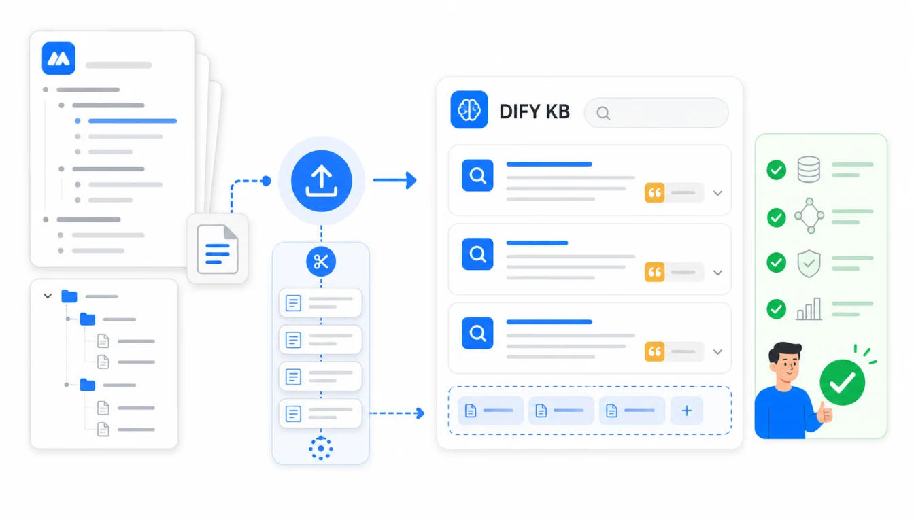

把幕布笔记接入 Dify 知识库，推荐路线是“幕布 → Markdown 主资料源 → Dify 分段检索 → 应用问答验收”。Markdown 负责让大纲层级可读，HTML 负责人工复核，JSON 负责保留原始结构，三者配合比只上传一个 PDF 更适合长期维护。
这篇按 2026年7月17日 能查到的 Dify 官方文档整理。Dify 的知识库用于把自有数据作为 LLM 的上下文，核心机制是 RAG；创建知识库时可以从本地文件、在线文档、网页等来源导入，并在导入时预览分段结果。
快速答案：先用 Mubu Exporter 批量导出 Markdown，并同时保存 HTML 和 JSON；把不该进入 AI 问答的草稿、隐私内容和过期资料剔除；在 Dify 里先上传 5 到 10 篇样本文档看分段效果；用真实问题测试召回和引用；通过后再分批导入全量资料。

为什么幕布大纲适合做 AI 知识库资料源？
很多团队的关键知识不在正式文档里，而散落在幕布大纲中：项目复盘、会议纪要、产品方案、客户问答、运营 SOP、读书笔记。它们本来就有标题、层级和短段落，转换成 Markdown 后，通常比长篇 Word 更容易切成可检索片段。
但这不等于“直接上传就能用”。AI 知识库真正影响效果的是资料边界、分段质量、检索命中和引用可追溯性。幕布导出只是第一步，后面还要做清理、试导入和验收。
格式怎么选：Markdown 做主源，JSON 做兜底
| 幕布导出格式 | 在 Dify 知识库中的角色 | 适合内容 | 注意事项 |
|---|---|---|---|
| Markdown | 主资料源 | 项目文档、SOP、问答、读书笔记 | 保留标题和列表，便于分段与人工复核 |
| HTML | 人工预览和对照 | 复杂排版、表格、公式较多的资料 | 不要只靠 HTML 判断检索效果，仍需看分段预览 |
| JSON | 原始结构备份 | 需要二次转换、审计、重建目录的资料 | 不建议未经清理直接作为问答主源 |
| PDF/Word | 补充资料源 | 定稿报告、制度文档、外部资料 | 格式复杂时要特别检查解析结果 |
Dify 文档中提到知识库可处理多类文本内容和结构化数据，本地文件导入也有上传数量和文件大小限制。实际落地时，不要为了省事把所有资料打成一个大文件，按主题和更新频率拆分会更好维护。
第一步：用 Mubu Exporter 导出三份资料
- 在 Chrome 打开 幕布网页版，确认当前账号有访问权限。
- 打开「幕布导出工具」，点击「获取文件信息」。
- 先导出一轮 Markdown，作为 Dify 知识库主资料源。
- 再导出 HTML，方便业务同学打开检查内容是否完整。
- 最后导出 JSON，保留幕布原始节点结构，方便以后重新转换。
推荐目录结构如下：
MubuAIKnowledge/2026-07-17/
Markdown/
HTML/
JSON/
review-notes.md
如果你的幕布里有协作文档，先确认这些文档是否适合进入 AI 知识库。插件不会绕过幕布权限，只会导出当前账号可访问的内容；但导出后上传到 Dify 的权限边界，需要你在 Dify 侧重新管理。
第二步：清理进入知识库的边界
AI 知识库最常见的问题不是“资料太少”，而是“资料边界不清”。幕布里经常混有草稿、个人备忘、过期方案和敏感信息，这些内容如果进入知识库，模型会照样检索出来。
| 清理项 | 处理建议 | 验收方式 |
|---|---|---|
| 个人隐私和账号信息 | 删除或脱敏后再上传 | 搜索手机号、邮箱、密钥、合同编号 |
| 过期 SOP | 移动到 archive，不进入默认知识库 | 检查标题中的年份和状态词 |
| 重复会议纪要 | 保留最终版，删除临时版 | 按文件名和更新时间抽查 |
| 未验证结论 | 标记为草稿或放入单独知识库 | 问题测试时观察是否被引用 |
| 外部图片 | 重要图片手动补充说明文字 | 看 Markdown 中图片链接是否仍可访问 |
第三步：在 Dify 创建知识库并看分段
在 Dify 里进入 Knowledge，创建 ready-to-use knowledge base 或自定义 Knowledge Pipeline。官方文档说明，知识库创建后可以上传本地文件，也可以使用在线文档、网页等数据源；导入阶段会进行预处理和分段。
对幕布导出的 Markdown，建议先上传一小组样本文档，而不是直接全量上传。重点观察三件事：
- 一级标题和二级标题是否还在同一个合理语义块内。
- 深层列表有没有被切得太碎，导致回答缺少上下文。
- 备注、表格、链接和图片说明是否能被正常解析。
如果分段太碎，可以把同一主题的短文档合并成一个 Markdown；如果分段太长，可以把大纲中的超长节点拆成独立小节。不要一开始就追求全量，先把样本调到可用。
第四步：用真实问题测试召回
AI 知识库不是上传成功就结束。你需要准备一组验收问题，覆盖“事实查找、流程步骤、边界条件、无法回答”四类。
| 问题类型 | 示例 | 通过标准 |
|---|---|---|
| 事实查找 | 某项目上线前需要检查哪些项？ | 能命中对应 SOP，而不是泛泛回答 |
| 流程步骤 | 新同事如何完成资料交接？ | 回答顺序与原文一致，并能给出来源 |
| 边界条件 | 哪些资料不能对外分享？ | 能引用权限或安全相关文档 |
| 无法回答 | 问一个资料库里不存在的问题 | 明确说缺少依据，而不是编答案 |
如果检索没有命中，先回到文档标题、分段和关键词，而不是马上改提示词。很多时候，问题出在资料源没有用业务语言命名，或同一概念在幕布里有多个说法。
第五步：建立更新和回滚机制
Dify 知识库会变成应用回答的依据，所以更新必须可追踪。建议每次从幕布导出时保留日期目录，并写一份 review-notes.md：
# 2026-07-17 Dify 知识库更新
- 来源：幕布 / 产品知识库 / 客服问答
- 导出格式：Markdown + HTML + JSON
- 新增：32 篇
- 删除：4 篇过期 SOP
- 敏感内容处理：已删除客户手机号
- 验收问题：20 个，通过 18 个，2 个待修订
这样后续如果问答质量下降，你能回到某个批次排查，而不是在 Dify 和幕布之间猜是哪一批资料出了问题。
哪些内容不适合直接进 Dify 知识库？
- 还在讨论中的个人草稿。
- 包含账号、密钥、合同、身份证、手机号的资料。
- 只靠截图或图片表达的流程说明。
- 明显过期但没有标记状态的 SOP。
- 协作文档中未确认授权范围的团队资料。
这些内容可以先导出备份，但不应该直接成为 AI 应用的默认检索源。导出和上线知识库是两件事，前者是数据可控，后者是回答可信。
常见问题
幕布里的图片能被 Dify 自动理解吗？
不要默认可以。幕布导出的 Markdown 通常保留图片链接，但图片是否可访问、是否被解析、是否需要 OCR，取决于知识库处理能力和你的文件内容。关键流程图建议补一段文字说明。
一个知识库放所有幕布笔记可以吗？
不建议。更稳的做法是按用途拆分：产品知识库、客服知识库、内部 SOP、项目复盘。不同知识库可以给不同应用使用，也方便权限和更新管理。
只导出 PDF 上传是否更省事？
短期省事，长期不一定。PDF 适合定稿归档，但幕布大纲常常还要迭代。Markdown 更容易更新、对比、清理和重新导入。
JSON 什么时候有用？
当你发现 Markdown 的分段不理想，或未来想按幕布原始节点重新生成更适合 RAG 的内容时，JSON 就很有价值。它不是给普通问答直接看的，而是给二次处理留后路。
总结：先把资料变干净，再让 AI 检索
Dify 能把团队资料接入 AI 应用，但回答质量取决于资料源质量。幕布导出工具解决的是第一段路：把原本困在幕布里的大纲资料批量变成 Markdown、HTML、JSON。真正上线前，还要做清理、分段预览、检索测试和权限验收。
如果你的目标是搭建可长期维护的 AI 知识库，不要只追求“上传成功”。更重要的是让每一次回答都能回到可信来源。
相关链接：